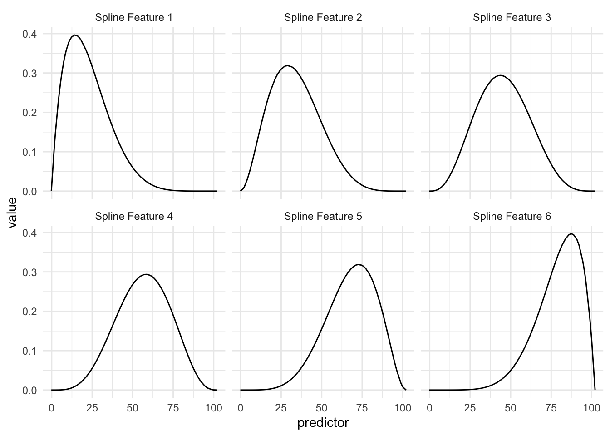
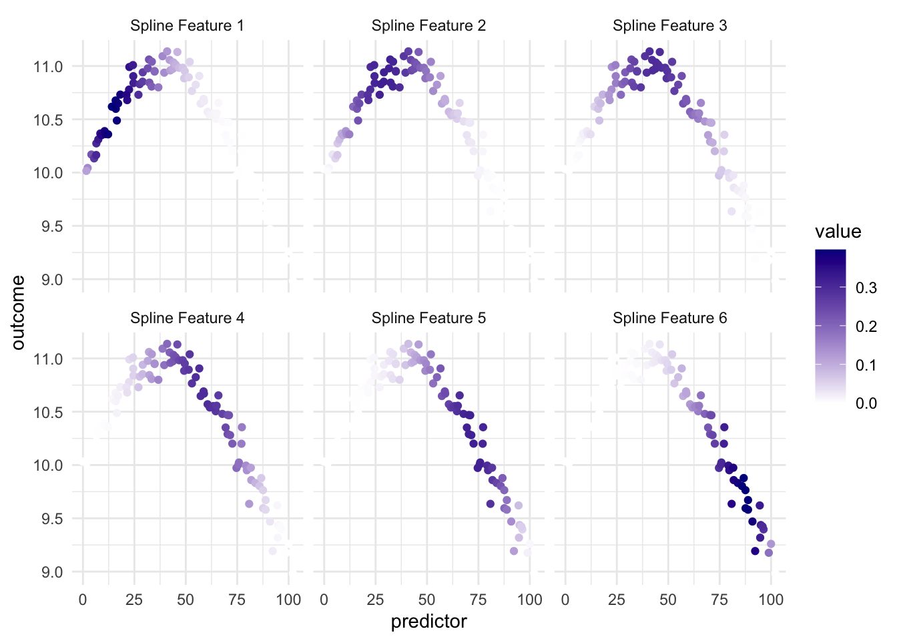
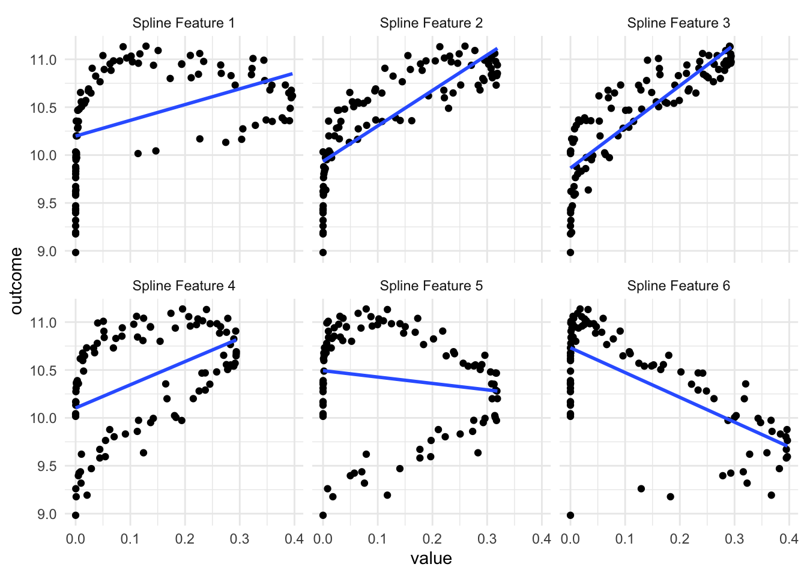
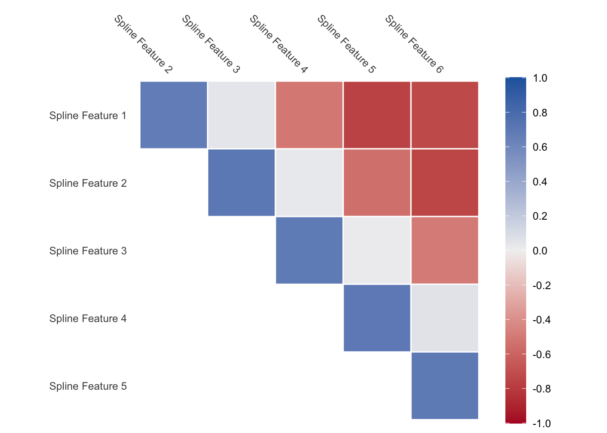
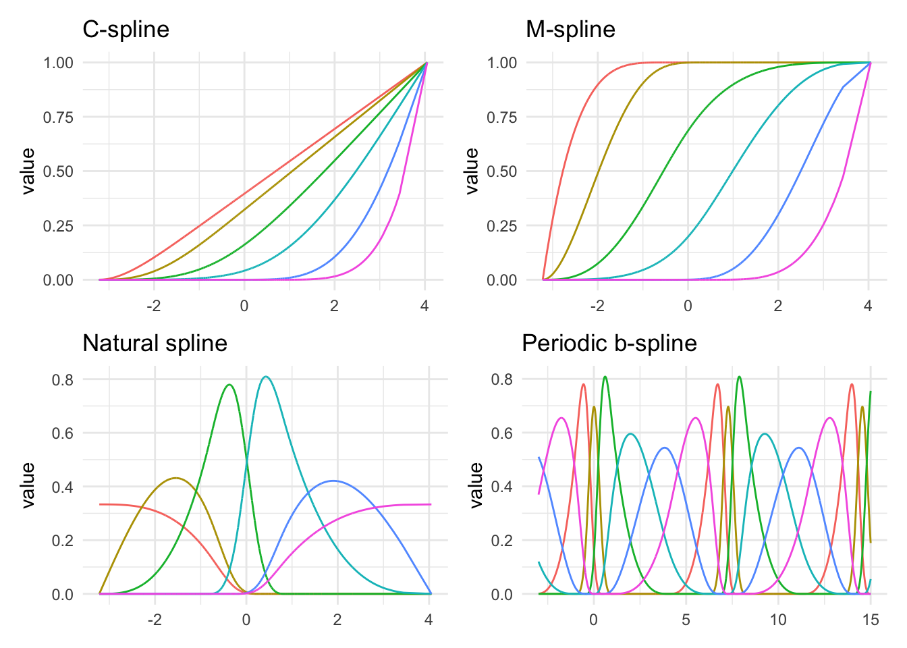
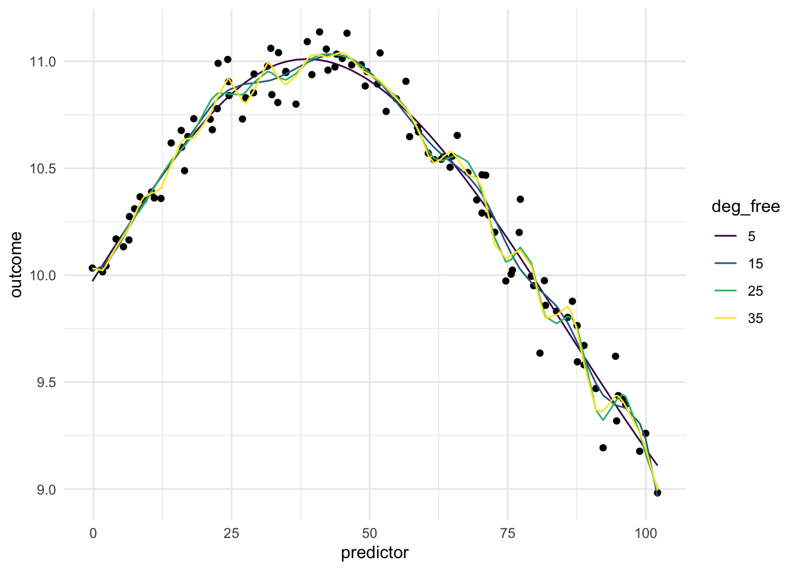

15 Splines
Splines, is one way to represent a curve that makes it useful in a modeling content, since it allows us to model non-linear relationships between predictors and outcomes. This is a trained method.
Being able to transform a numeric variable that has a non-linear relationship with the outcome into one or more variables that does have linear relationships with the outcome is of great importance, as many models wouldn’t be able to work with these types of variables effectively themselves. Below is a toy example of one such variable
Here we have a non-linear relationship. It is a fairly simple one, the outcome is high when the predictor takes values between 25 and 50, and the outside the ranges it takes over values. Given that this is a toy example, we do not have any expert knowledge regarding what we expect the relationship to be outside this range. The trend could go back up, it could go down or flatten out. We don’t know.
As we saw in Chapter 14, one way to deal with this non-linearity is to chop up the predictor and emit indicators for which region the values take. While this works, we are losing quite a lot by detail by the rounding that occurs. This is where splines comes in. Imagine that instead of indicators for whether a value is within a range, we have a set of functions that gives each predictor value a set of values, related to its location in the distribution.

spline_rounder <- function(value, name) {
name <- paste0("predictor_bs_", name)
value <- bake(rec_splines, tibble(predictor = value))[[name]]
value <- round(value / 0.05) * 0.05
sprintf("%.2f", value)
}Above we see an example of a Basis function that creates 6 features. The curves represent the area where they are “activated”. So if the predictor has a value of 15 then the first basis function returns 0.40, the second basis function returns 0.20 and so one, with the last basis function returning 0.00 since it is all flat over there.
This is a trained method as the location and shape of these functions is determined by the distribution of the variables we are trying to apply the spline to.
So in this example we are taking 1 numeric variable and turning it into 6 numeric variables.
rec_splines |>
bake(tibble(predictor = c(0, 10, 35, 50, 80))) |>
select(-predictor_bs_7) |>
mutate_all(round, 2) |>
rename_all(stringr::str_replace, "predictor_bs_", "Spline Feature ") |>
knitr::kable()| predictor | Spline Feature 1 | Spline Feature 2 | Spline Feature 3 | Spline Feature 4 | Spline Feature 5 | Spline Feature 6 |
|---|---|---|---|---|---|---|
| 0 | 0.01 | 0.00 | 0.00 | 0.00 | 0.00 | 0.00 |
| 10 | 0.37 | 0.12 | 0.02 | 0.00 | 0.00 | 0.00 |
| 35 | 0.19 | 0.30 | 0.26 | 0.14 | 0.04 | 0.01 |
| 50 | 0.06 | 0.17 | 0.28 | 0.27 | 0.15 | 0.05 |
| 80 | 0.00 | 0.01 | 0.04 | 0.13 | 0.29 | 0.35 |
This spline is set up in such a way, that each spline function signals if the values are close to a given region. This way we have a smooth transition throughout the distribution.
If we take a look at how this plays out when we bring back the outcome we can look at this visualization

and we have that since the different spline features highlights different parts of the predictor, we have that at least some of them are useful when we look at the relationship between the predictor and the outcome.
It it important to point out that this transformation only uses the predictor variable to do its calculations. And the fact that it works in a modeling sense it that the outcome predictor relationship in this case, and in many real life cases, can helpfully be explained by “the predictor value has these values”.

As we see in the above visualization, some of these new predictors are not much better than the original. But a couple of them do appear to work pretty well, especially the 3rd one. Depending on which model we use, having these 6 variables are gonna give us higher performance than using the original variable alone.
One thing to note, is that you will get back correlated features when using splines. Some values of the predictor will influence multiple of the spline features as the spline functions overlap. This is expected, but is worth noting. If you are using a model type that doesn’t handle correlated features well, then you should take a look at the methods outlined in Chapter 90 for ways to deal with correlated features.

Lastly, the above spline functions you saw were called B-splines, but they are not the only kind of splines you can use.

Above we see a number of different kinds of splines. As we can see they are all trying to do different things. You generally can’t go too wrong by picking any of them, but knowing the data can help guide which of them you should use. The M-splines intuitively can be seen as a threshold features. The periodic example is also interesting. Many of the types of splines can be formulated to work periodically. This can be really handy for data that has a naturally periodic nature to them.
Below is a chart of how well using splines works when using it on our toy example. Since the data isn’t that complicated, a small deg_free is sufficient to fit the data well.

15.1 Pros and Cons
15.1.1 Pros
- Works fast computationally
- Good performance compared to binning
- is good at handling continuous changes in predictors
15.1.2 Cons
- arguably less interpretable than binning
- creates correlated features
- can produce a lot of variables
- have a hard time modeling sudden changes in distributions
15.2 R Examples
We will be using the ames data set for these examples.
ames |>
select(Lot_Area, Year_Built)# A tibble: 2,930 × 2
Lot_Area Year_Built
<int> <int>
1 31770 1960
2 11622 1961
3 14267 1958
4 11160 1968
5 13830 1997
6 9978 1998
7 4920 2001
8 5005 1992
9 5389 1995
10 7500 1999
# ℹ 2,920 more rows{recipes} provides a number of steps to perform spline operations, each of them starts with step_spline_. Let us use a B-spline and a M-spline as examples here:
log_rec <- recipe(~ Lot_Area + Year_Built, data = ames) |>
step_spline_b(Lot_Area) |>
step_spline_monotone(Year_Built)
log_rec |>
prep() |>
bake(new_data = NULL) |>
glimpse()Rows: 2,930
Columns: 20
$ Lot_Area_01 <dbl> 0.000000000, 0.000000000, 0.000000000, 0.000000000, 0.00…
$ Lot_Area_02 <dbl> 0.000000e+00, 0.000000e+00, 0.000000e+00, 0.000000e+00, …
$ Lot_Area_03 <dbl> 0.0000000, 0.0000000, 0.0000000, 0.0000000, 0.0000000, 0…
$ Lot_Area_04 <dbl> 0.0000000000, 0.0000000000, 0.0000000000, 0.0000000000, …
$ Lot_Area_05 <dbl> 0.0000000000, 0.0000000000, 0.0000000000, 0.0078526499, …
$ Lot_Area_06 <dbl> 0.000000000, 0.283603274, 0.000000000, 0.507327055, 0.00…
$ Lot_Area_07 <dbl> 0.73399934, 0.71382012, 0.96474057, 0.48414256, 0.971047…
$ Lot_Area_08 <dbl> 2.408258e-01, 2.576602e-03, 3.503161e-02, 6.777374e-04, …
$ Lot_Area_09 <dbl> 2.444735e-02, 3.441535e-09, 2.277849e-04, 0.000000e+00, …
$ Lot_Area_10 <dbl> 7.274651e-04, 0.000000e+00, 3.035128e-08, 0.000000e+00, …
$ Year_Built_01 <dbl> 1, 1, 1, 1, 1, 1, 1, 1, 1, 1, 1, 1, 1, 1, 1, 1, 1, 1, 1,…
$ Year_Built_02 <dbl> 1.0000000, 1.0000000, 1.0000000, 1.0000000, 1.0000000, 1…
$ Year_Built_03 <dbl> 0.9991483, 0.9995281, 0.9977527, 1.0000000, 1.0000000, 1…
$ Year_Built_04 <dbl> 0.9041892, 0.9210803, 0.8649607, 0.9884577, 1.0000000, 1…
$ Year_Built_05 <dbl> 0.20672563, 0.24041792, 0.14882796, 0.54043388, 0.999999…
$ Year_Built_06 <dbl> 4.792231e-04, 1.169978e-03, 2.995144e-05, 3.881537e-02, …
$ Year_Built_07 <dbl> 0.000000e+00, 0.000000e+00, 0.000000e+00, 4.491099e-07, …
$ Year_Built_08 <dbl> 0.00000000, 0.00000000, 0.00000000, 0.00000000, 0.221125…
$ Year_Built_09 <dbl> 0.000000e+00, 0.000000e+00, 0.000000e+00, 0.000000e+00, …
$ Year_Built_10 <dbl> 0, 0, 0, 0, 0, 0, 0, 0, 0, 0, 0, 0, 0, 0, 0, 0, 0, 1, 0,…We can set the deg_free argument to specify how many spline features we want for each of the splines.
log_rec <- recipe(~ Lot_Area + Year_Built, data = ames) |>
step_spline_b(Lot_Area, deg_free = 3) |>
step_spline_monotone(Year_Built, deg_free = 4)
log_rec |>
prep() |>
bake(new_data = NULL) |>
glimpse()Rows: 2,930
Columns: 7
$ Lot_Area_1 <dbl> 0.31422525, 0.13110895, 0.16045431, 0.12580964, 0.1557218…
$ Lot_Area_2 <dbl> 0.0521839123, 0.0066461383, 0.0103524317, 0.0060782666, 0…
$ Lot_Area_3 <dbl> 2.888757e-03, 1.123014e-04, 2.226446e-04, 9.788684e-05, 2…
$ Year_Built_1 <dbl> 0.9827669, 0.9841047, 0.9798397, 0.9914201, 0.9999212, 0.…
$ Year_Built_2 <dbl> 0.8614458, 0.8686207, 0.8464715, 0.9129756, 0.9968924, 0.…
$ Year_Built_3 <dbl> 0.5411581, 0.5539857, 0.5156159, 0.6440229, 0.9532064, 0.…
$ Year_Built_4 <dbl> 0.1653539, 0.1729990, 0.1508264, 0.2341901, 0.6731684, 0.…These steps have more arguments, so we can change other things. The B-splines created by step_spline_b() defaults to cubic splines, but we can change that by specifying which polynomial degree with want with the degree argument.
log_rec <- recipe(~ Lot_Area + Year_Built, data = ames) |>
step_spline_b(Lot_Area, deg_free = 3, degree = 1) |>
step_spline_monotone(Year_Built, deg_free = 4)
log_rec |>
prep() |>
bake(new_data = NULL) |>
glimpse()Rows: 2,930
Columns: 7
$ Lot_Area_1 <dbl> 0.00000000, 0.00000000, 0.00000000, 0.00000000, 0.0000000…
$ Lot_Area_2 <dbl> 0.89690903, 0.99540159, 0.98247163, 0.99766006, 0.9846078…
$ Lot_Area_3 <dbl> 0.103090969, 0.004598405, 0.017528365, 0.002339940, 0.015…
$ Year_Built_1 <dbl> 0.9827669, 0.9841047, 0.9798397, 0.9914201, 0.9999212, 0.…
$ Year_Built_2 <dbl> 0.8614458, 0.8686207, 0.8464715, 0.9129756, 0.9968924, 0.…
$ Year_Built_3 <dbl> 0.5411581, 0.5539857, 0.5156159, 0.6440229, 0.9532064, 0.…
$ Year_Built_4 <dbl> 0.1653539, 0.1729990, 0.1508264, 0.2341901, 0.6731684, 0.…